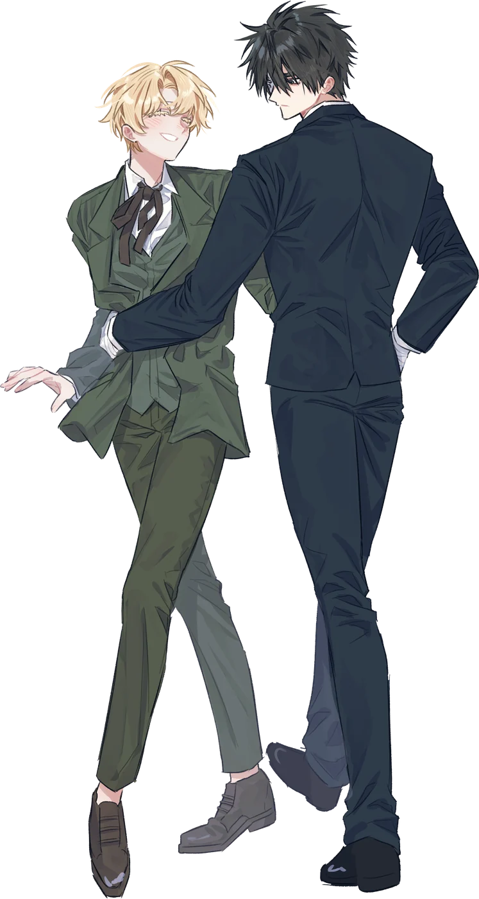
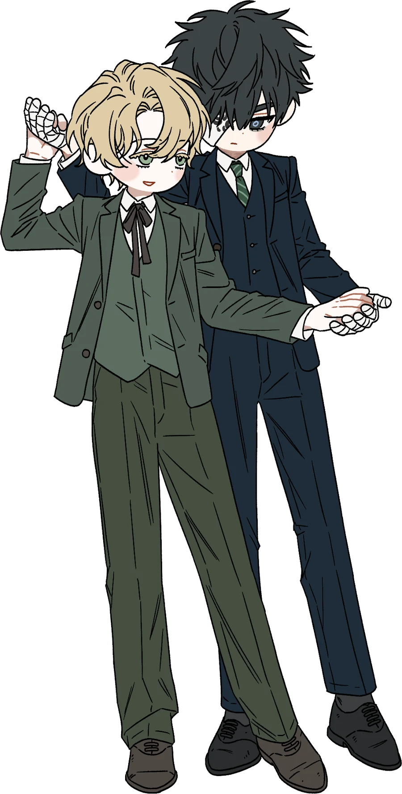

1주년에는 어떤 글을 써야 할지 정말 많이 고민했어요. 특별한 날에 드리는 글인 만큼 잘 쓰고 싶었는데, 그 마음이 커질수록 오히려 무엇부터 써야 할지 모르겠더라고요. 혼자서는 도무지 갈피가 잡히지 않아서 니요님께도 찾아갔어요⋯⋯.
그때 니요님이 해 주신 말씀이 오래 마음에 남았어요. 앤오가 그리는 자컾도 좋지만 앤오가 그리는 앤캐도 참 좋다고. 그러니 앤오가 써 주는 자컾 글만큼이나 앤캐의 시선으로 바라본 이야기도 좋을 거라고요. 그 말을 듣고 나니 오즈에게 조금 더 가까이 가 보고 싶어졌어요. 오즈가 매그를 어떻게 바라보고, 무엇을 기억하고, 어떤 마음으로 사랑하는지. 평소에는 대사나 행동 사이에 조금씩 묻어 두었던 마음을 이번에는 오즈의 목소리로 오래 들려드리고 싶었어요.
처음에는 매그가 방랑하던 10년 동안의 오즈를 써 볼까 했어요. 당신이 없는 동안 이 사람은 어떻게 지냈을까, 어떤 하루를 견디며 당신을 기다렸을까. 그런데 생각하다 보니 그 시간을 차례로 따라가는 것보다 오즈의 마음을 더 잘 보여 줄 수 있는 이야기가 있을 것 같더라고요. 그러다 예전에 써 드렸던 탱고 글을 좋아해 주셨던 게 떠올랐어요. 그 글에서 잠시 지나갔던 미뉴에트에 이번에는 조금 더 오래 머물러 보면 어떨까 싶었어요.
그렇게 쓰게 된 글이 「이토록 가까운 곳에서」예요.
앞선 글에서 미뉴에트는 다시 함께 춤추기 위해 견뎌야 하는 시간이었어요. 이번에는 그 느린 음악 속에서 오즈가 무엇을 품고 있었는지 들여다보고 싶었어요. 매그의 무정한 표정과 문득 누그러지던 시선, 손바닥에 남은 온기와 팔 안쪽이 기억하는 몸의 너비 같은 것들이요. 오즈가 사랑한 매그는 그런 사소하고 구체적인 모습으로 남아 있을 것 같았어요. 함께 있을 때에는 너무 익숙해서 미처 헤아리지 않았던 것들이 혼자가 된 뒤에는 하루를 가득 채울 만큼 커지기도 하니까요.
그리고 그토록 오래 기억으로만 품었던 사람이 다시 품 안에 들어오는 순간을 써 드리고 싶었어요. 빈자리를 향해 내밀었던 손에 손이 맞물리고, 혼자 남겨 두었던 박자에 다른 사람의 걸음이 들어오는 순간을요. ‘사랑한 사람이 있었다’로 시작한 글이, 마침내 ‘이토록 가까운 곳에서 생이 부스럭거리고 있다’에 닿기를 바랐어요. 오즈가 사랑하는 사람이 다시 지금 여기에 있다는 것을 온몸으로 느낄 수 있도록.
1주년을 맞아 제가 바라보는 오즈와 그 오즈가 온 마음을 바쳐 사랑하는 매그를 담아 보았어요. 함께 보낸 한 해를 떠올리며 읽어 주셔도 오즈가 매그에게 아주 오래 하고 싶었던 고백으로 읽어 주셔도 좋겠어요. 제가 두 사람을 얼마나 애틋하게 바라보고 있는지도 그 사이에 조금은 전해졌으면 해요.
그보다, BGM 참 좋지 않나요? Wuthering Heights의 테마곡이에요.
처음에는 비와 바람 소리 사이로 매그의 어둡고 음울한 곡조가 흐르잖아요. 그런데 그 안으로 오즈가 슬며시 끼어드는 것 같지 않나요? 저는 그 여린 선율이 꼭 매그를 발견한 오즈처럼 들렸어요. 당신이 있는 곳을 알아보고 망설이지도 않고 그 어둠 속으로 들어가는 것처럼요.
그렇게 두 사람의 곡조가 함께 뻗어 나가는 부분이 정말 좋아요. 조금은 애틋하고 슬픈 마음을 품은 채 함께 어둠 속을 달리다가 어느 순간에는 속도를 늦추어 나란히 걷다가. 서로를 바라보고, 곁에 있는 사람을 한껏 느끼면서요. 처음에는 어둡기만 하던 곡조가 벅차게 고조되었다가 차츰 다정하게 누그러지는 것도 좋아요. 매그의 곁에 오즈가 있고, 오즈의 곁에 매그가 있다는 사실이 음악 안에서 조금씩 자리를 잡아 가는 것 같아서요.
그러다 이윽고 오즈 혼자 남아 곡을 이어 가는 것처럼 들리는 순간이 와요. 여전히 애틋하고, 여전히 슬프지만, 함께 걷던 박자를 잊지 않은 채로요. 매그가 있던 자리를 비워 둔 채 혼자서도 그 선율을 이어 가다가 마침내 다시 매그를 만나⋯⋯. 저는 그렇게 듣게 되더라고요. 그래서 그 맑고 여린 선율이 유독 마음에 남았어요. 오래 그리워한 사람을 다시 마주했을 때에는 기쁨 속에도 그동안의 슬픔이 조금쯤 묻어 있을 것 같아서요.
아, 이 피아노곡 정말 좋지 않나요? 듣고 있으면 두 사람이 함께 움직이는 모습이 자꾸만 떠올라요. 글을 다 읽으신 뒤에도 잠깐만 더 머물러 들어 주셨으면 좋겠어요. 제가 말로 오래 풀어놓은 마음들이 여기서는 서로 다른 두 선율로 나란히 흐르고 있는 것 같거든요.
이렇게 글을 쓰고 음악을 듣고 있으니, 우리가 두 사람을 좋아하며 한 해를 함께 보냈다는 게 새삼 실감 나요. 기념일에 무엇을 드리면 좋을지 이렇게 오래 고민할 수 있다는 것도 참 기쁜 일이더라고요. 좋아해 주실 모습을 상상하면서 준비하는 시간까지도 제게는 이번 1주년의 일부였어요.
오즈에게 매그를 만나게 해 주셔서, 그리고 저와 함께 두 사람의 이야기를 만들어 주셔서 고마워요. 아직도 보고 싶은 장면이 많고, 나누고 싶은 이야기가 많아요. 한 해를 함께 보내고도 다음 이야기가 자꾸 궁금해진다는 게 저는 참 좋아요.
우리의 첫 번째 해를 축하해요. 다음 계절에도 같이 두 사람을 들여다보고, 사소한 장면 하나에도 한참을 이야기할 수 있으면 좋겠어요. 앞으로도 잘 부탁드려요. 매그도, 우리 워더링 하이츠도 아주 많이 좋아해요 ♡

